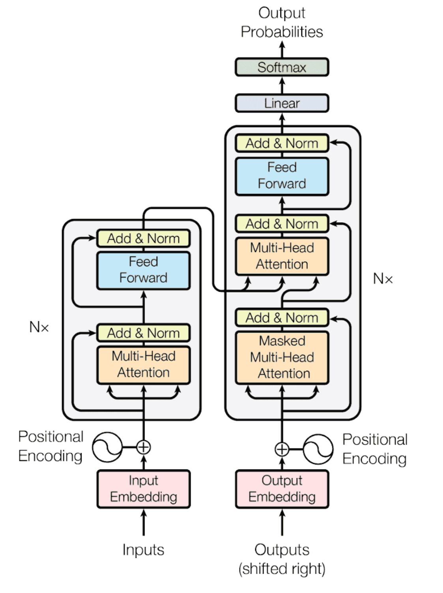
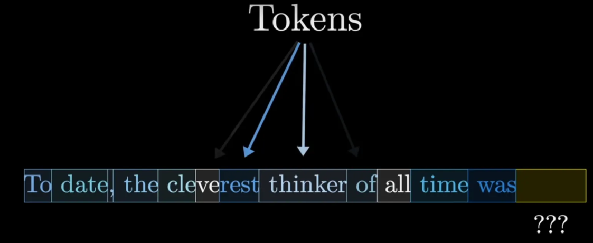
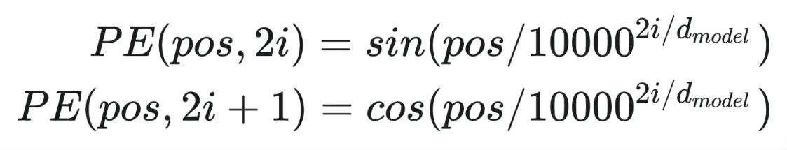
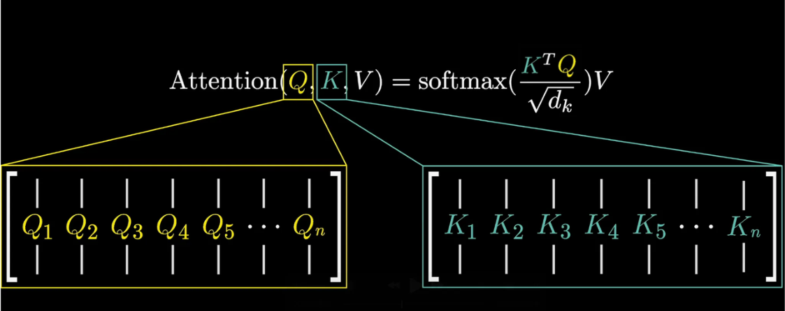
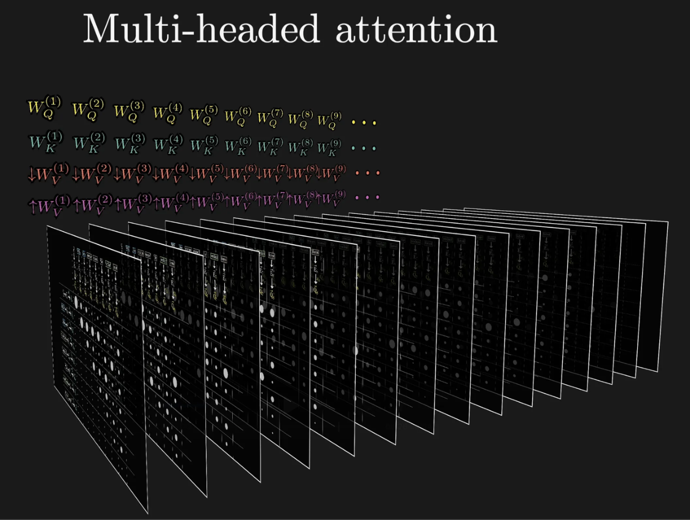

Transformer 架构详解
Transformer 是当前大语言模型最核心的基础架构，大多数主流模型都建立在这一结构之上。 Transformer 最早由 Ashish Vaswani 等人在 2017 年发表的论文 Attention Is All You Need 中提出， 其核心思想是利用注意力机制来建模序列数据中的关系，从而摆脱传统循环神经网络对顺序计算的依 赖。这种设计使得模型可以并行处理整个序列，大幅提高训练效率，同时能够更好地捕捉长距离语义 依赖关系。

在整体结构上，Transformer 由多个重复堆叠的层组成，每一层都包含注意力计算和前馈神经网络两 个主要部分。在最初的设计中，Transformer 包含 Encoder（编码器） 和 Decoder（解码器） 两个
部分，其中 Encoder 负责理解输入序列的语义信息，而 Decoder 负责根据这些信息生成输出序列。在 机器翻译任务中，Encoder 会先将源语言句子编码为一系列向量表示，Decoder 再根据这些表示逐步 生成目标语言句子。
Transformer 的基本计算流程可以分为几个关键步骤。首先，输入文本会经过 Tokenization 转换为 Token 序列，然后每个 Token 会被映射为一个高维向量，这一过程称为 Embedding。

由于 Transformer 本身没有顺序结构，因此还需要加入 Position Encoding（位置编码） 来表示词语 在句子中的位置。Embedding 向量与位置编码相加后，就形成了模型真正的输入表示。

在进入 Transformer 层之后，最核心的计算模块是 Self-Attention（自注意力机制）。SelfAttention 的作用是计算序列中每个 Token 与其他 Token 之间的相关性，从而决定在理解某个词时应 该关注哪些上下文信息。例如，在句子“机器学习改变世界”中，模型在理解“改变”这个词时，可 能需要同时关注“机器学习”和“世界”。通过注意力机制，模型可以自动学习这种依赖关系。 在具体实现中，每个 Token 的表示会被映射为三个向量：Query、Key 和 Value。模型通过计算 Query 与 Key 之间的相似度来得到注意力权重，然后用这些权重对 Value 向量进行加权求和，从而得 到新的表示。这一过程使得每个 Token 的表示都可以融合整个序列中的信息，从而获得更丰富的语义 表达能力。

为了提高模型的表达能力，Transformer 还引入了 Multi-Head Attention（多头注意力） 机制。多头 注意力的思想是将注意力计算分成多个子空间，每个注意力头可以关注不同类型的语义关系，例如语 法关系、语义关系或上下文依赖。多个注意力头的结果会被拼接在一起，然后再经过线性变换得到最 终的输出表示。这种设计能够显著增强模型对复杂语言结构的理解能力。

- 在注意力计算之后，每一层 Transformer 还包含一个 Feed Forward Network（前馈神经网络）。这 一部分通常由两个全连接层组成，其作用是对注意力层输出的特征进行非线性变换，从而进一步提升
模型的表达能力。为了保证训练稳定性，每个子层还会使用 Residual Connection（残差连接） 和 Layer Normalization（层归一化） 来避免梯度消失或模型退化的问题。
在实际应用中，大多数大语言模型通常只使用 Transformer 的 Decoder 结构，因为语言生成任务本质 上是根据已有上下文预测下一个 Token。这类模型通过掩码注意力（Masked Attention）确保模型在 生成当前 Token 时只能看到之前的内容，从而保证生成过程符合自回归的语言建模方式。
随着模型规模的不断扩大，Transformer 也在不断演进。例如，一些模型通过改进注意力计算来支持 更长的上下文长度，也有一些研究通过稀疏注意力或线性注意力来降低计算复杂度。但无论如何变 化，Transformer 的核心思想仍然是通过注意力机制建立序列元素之间的关系，并通过深层网络不断 提取和组合语义信息。
总体来看，Transformer 架构的提出彻底改变了自然语言处理领域的发展方向。它不仅成为大语言模 型的核心基础结构，也被广泛应用于计算机视觉、语音识别以及多模态学习等领域。正是由于 Transformer 具备强大的表达能力和良好的扩展性，才使得今天的大语言模型能够在理解和生成自然 语言方面达到如此高的水平。